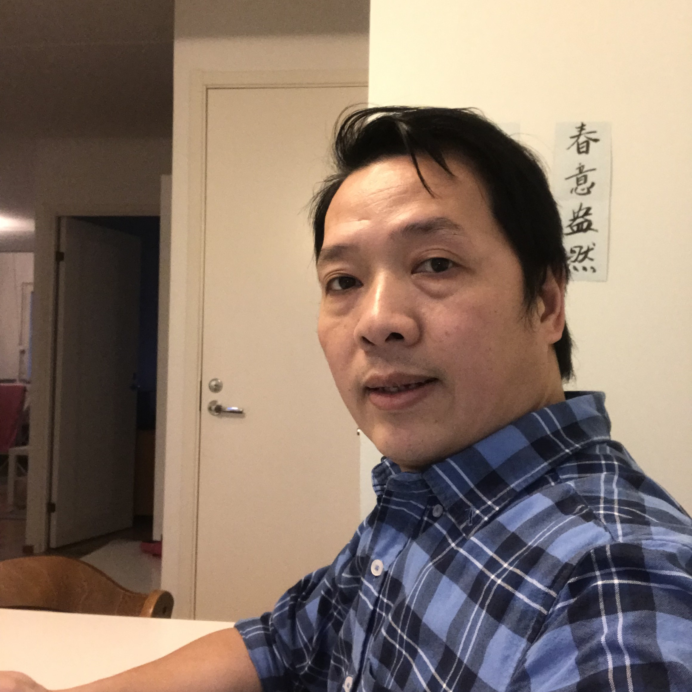

 VONG-SU-SENH ANSIOLUETTELO II Vaskihuhdantie 4A8 00740 HELSINKI 040-9395399 susenhvong2019@gmail.com SUOMESSA KURSSIT -Artfman Consulting OY (koulutus), Vantaa 2016-2017 -Amiedu, OY (koulutus), Vantaa 2007-2008 (Suomen kieltä keski taso B1.1) -Helsinki Seudun Kesäyiliopisto(Helsinki) 2017-2018 (Suomen kieltä Syventävä kurssi) -VARIA ammatti koulussa ICT-alan(180 osa) 2018-2020 (tietokonee asenta opiskelijaksi). TYÖKOKEMUS Kiina kieli opettaja, Ho Chi Minh, Viet Nam 1997-2007 Koulun johtaja, Ho Chi Minh, Viet Nam 2004-2007 IT tietokonekoulutus, Ho Chi Minh, Viet Nam 2001-2004 KIELITAITO -Kiina äidinkieli ( Mandarin ja Cantoni) -Vietnam suullinen hyvä kirjallinen hyvä -Englanti suullinen tyydyttävä kirjallinen tyydyttävä -Suomi suullinen tyydyttävä kirjallinen tyydyttävä IT –TAIDOT -MS-office( Windows-Word-Excel-Access-Powerpoin...), internet, sähköposti, tekstinkäsittely -VisuaBasic 6.0- SQL Sever. HTML-CSS-JavaScript C ohjemoiti Arduino & Raspberry PI -Nyt opiskelin valmis VARIA-ammatti Opintosta ICT-alan(tietokonee asenta opiskelijaksi). HARRASTUKSET matkustus, kuntosali, itsepuolustus (Kung Fu) SUOSITTELIJA (Kieli-koulusta Opettajat) Timo Luoma Kristiina Svensson Timo.luoma@arfcon.fi Kristiinan.Svensson@arfcon.fi 044-733.1159 044-733.1121 SUOSITTELIJA (Ammatti-opintosta Opettajat) Tommi Vuorinen Jarkko Kultamies Tommi.vuorinen@vantaa.fi Jarkko.kultamies@eduvantaa.fi 044-982.1742 040-053.4575